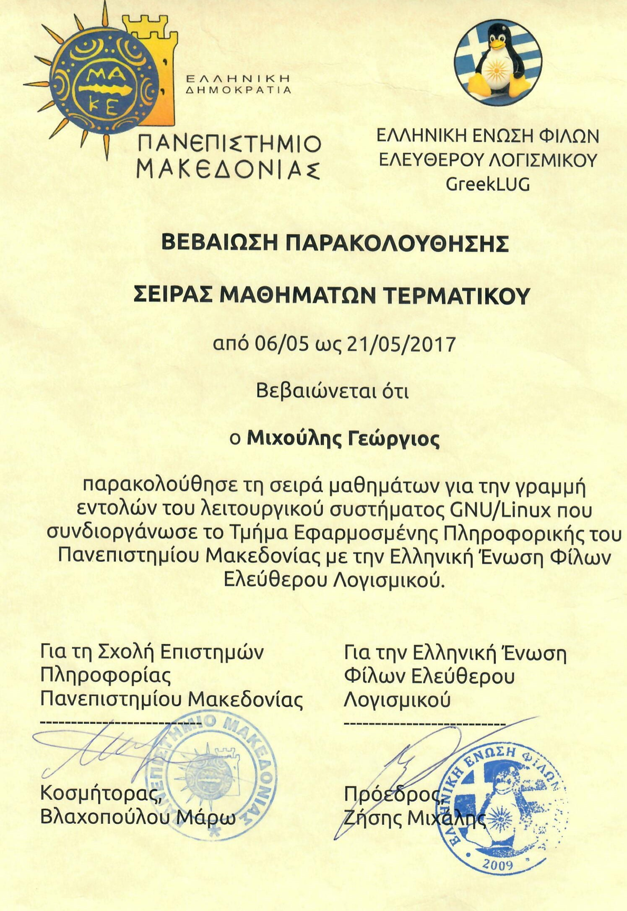

What I do now
Web3 full-stack developer at Cyberscope by TAC since May 2026, working remotely from Thessaloniki.
Since May 2026 I've been a Web3 full-stack developer at Cyberscope by TAC. I build Web3 products end to end: the contracts, the on-chain integrations, the React and Next.js front ends, and security tooling.
I work remotely from Thessaloniki.
What I build
Smart contracts, NFT and DeFi products, the Next.js and NestJS apps around them, and graph-embedding models on the data side.
Most of my work sits where a contract meets a product people use: NFT marketplaces, DeFi, and the web apps around them. At Sidroco that meant an NFT marketplace for 5G and Hyperledger Fabric prototypes. At the University of Nicosia it meant large Next.js and NestJS apps in Docker, and a Web3 NFT marketplace.
Contracts and ledgers: Solidity, Hyperledger Fabric
Front end: TypeScript, React, Next.js
Back end: NestJS, Docker, cloud deployment
Data: graph embeddings, the subject of my MSc
Also studied: Rust (developer certificate), Move on Sui (bootcamp award, 2025)
Where I've worked
Cyberscope by TAC, Sidroco Holdings, the University of Derby / Mediterranean College, and the University of Nicosia / IFF.
Web3 Full-Stack Developer
End-to-end Web3 products: contracts, on-chain integrations, React/Next front ends, security tooling.
Blockchain Developer & Researcher
An NFT marketplace for 5G, Hyperledger Fabric prototypes, an Erasmus+ LMS, and multinational EU projects.
Lecturer & Academic Partner
Networks & Security, Web Scripting, Application Development, with inclusivity-first assessment.
Blockchain & Full-Stack Developer
Large Next.js / NestJS / Docker apps and a Web3 NFT marketplace.
Sites I've built
Among them: metau.unic.ac.cy, bbf-gui.ddns.net and verde.uom.gr.
 metau.unic.ac.cyA University of Nicosia course site with a Connect Wallet button, and a classroom set inside a metaverse.
metau.unic.ac.cyA University of Nicosia course site with a Connect Wallet button, and a classroom set inside a metaverse. bbf-gui.ddns.netThe front end of the Blockchain Benchmarking Framework, for deploying and evaluating different blockchain protocols.
bbf-gui.ddns.netThe front end of the Blockchain Benchmarking Framework, for deploying and evaluating different blockchain protocols. verde.uom.grVerDe, the academic credential verification system from my papers. This is its contact page.
verde.uom.grVerDe, the academic credential verification system from my papers. This is its contact page. stg.accelerate.unic.ac.cyThe sign-in screen of a University of Nicosia platform, on its staging address.
stg.accelerate.unic.ac.cyThe sign-in screen of a University of Nicosia platform, on its staging address. celc.web.auth.grThe Greek-language site of the Centre for European Legal Culture at Aristotle University.
celc.web.auth.grThe Greek-language site of the Centre for European Legal Culture at Aristotle University. eudem.polsci.auth.grThe site of the EUDEM Jean Monnet Chair: staff, activities and news.
eudem.polsci.auth.grThe site of the EUDEM Jean Monnet Chair: staff, activities and news. marlab.ode.uom.grMarLab, the Marketing Laboratory at the University of Macedonia: membership, research, publications.
marlab.ode.uom.grMarLab, the Marketing Laboratory at the University of Macedonia: membership, research, publications.
Papers
Most cited: a process-aware approach for blockchain-based verification of academic qualifications (2022, 32 citations).
- 32citationsA process-aware approach for blockchain-based verification of academic qualifications
- 11Verification of academic qualifications through Ethereum blockchain: an introduction to VerDe
- 7Exploring decentralized governance: a framework applied to Compound Finance
- 1FraMark: a blockchain marketplace for 5G network management using fractional NFTs
- 1Data security for smart cities
- 0Unlocking 5G network slicing: a survey on blockchain marketplaces utilizing NFTs, AI, and advanced resource management
- 0Graph embedding and node features for drug-target interaction prediction
- 0Blockchain in higher education: permissioned and permissionless approaches
Plus two Greek-language theses on verifying academic titles with Ethereum (2020, 2021). Live counts are on my Google Scholar profile.
What my research follows
Credential verification, then decentralized governance, and now marketplaces for 5G networks.
Credential verification
VerDe, which verifies academic qualifications on Ethereum, then a process-aware approach to the same problem.
Decentralized governance
A framework for looking at on-chain governance, applied to Compound Finance.
5G marketplaces
FraMark, which manages 5G networks with fractional NFTs, and a survey of NFT marketplaces for network slicing.
Alongside it: graph embeddings for drug-target interaction prediction (my MSc work, 2022), and data security for smart cities (2025).
Education
MSc Data and Web Science, Aristotle University of Thessaloniki, on a DeepMind scholarship. BSc Applied Informatics, University of Macedonia.

BSc Applied Informatics
My thesis was on verifying academic credentials with Ethereum, the topic of my two most cited papers.

MSc Data and Web Science
I worked on graph-embedding methods for drug-target interaction prediction.
Teaching
Networks & security, web scripting and application development at the University of Derby / Mediterranean College, 2023 to 2025.
From 2023 to 2025 I was a lecturer and academic partner at the University of Derby / Mediterranean College. My modules:
- Networks & Security
- Web Scripting
- Application Development
I designed assessment inclusivity-first. Outside the classroom I give talks on Web3 and edge tech, and I wrote about permissioned and permissionless blockchains in higher education for the 4th Summit on Gender Equality in Computing (2022).
What I studied along the way
Short courses in networking, security, cloud, machine learning, Rust and Move.
Alongside the degrees I took short courses, mostly where teaching or work needed them. These are scans of the real certificates; each opens full size.
 CCNA, Cisco Certified Network Associate
CCNA, Cisco Certified Network Associate
 Networking essentials
Networking essentials
 Advanced ethical hacking
Advanced ethical hacking


GNU/Linux command line Cloud engineering
Cloud engineering
 Machine learning and deep neural networks
Machine learning and deep neural networks
 Introduction to digital currencies
Introduction to digital currencies
 Rust developer
Rust developer
 Move/Sui bootcamp, Thessaloniki (award, 2025)
Move/Sui bootcamp, Thessaloniki (award, 2025)
 How to get published with IEEE
How to get published with IEEE
Awards and grants
A DeepMind Scholarship (2020 to 2022), 3rd place at the Infinitech Hackathon (2022), a Basic Research grant (2020 to 2021) and a Move/Sui bootcamp award (2025).
- DeepMind Scholarship
- 3rd place, Infinitech Hackathon
- Basic Research grant
- Award at the first Move/Sui bootcamp in Thessaloniki
Also, briefly
Write to me
gmixoulis@gmail.com. I'm also on LinkedIn, GitHub, Google Scholar and X.